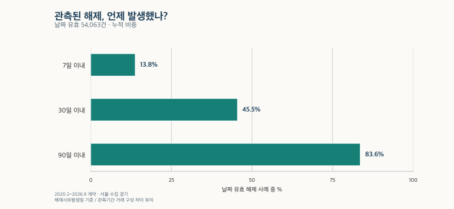
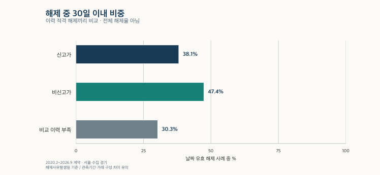

거래량과 시장 읽기 · 계약부터 해제까지
아파트 계약 해제까지 며칠? 7·30·90일 분포와 신고가 비교
서울·수집 경기의 2020~2026년 관측 해제를 7·30·90일로 비교합니다. 가격대·계약 연도·신고가 차이와 날짜 미상, 최근 계약의 짧은 관측기간을 구분해 실거래가 해제 표시를 읽어보세요.
분석 기간 · 2020.2~2026.9 · 관측 해제에 조건부 | 자료 기준일 · 2026-10-03 · 과거 수집일 미상 포함
실거래가에 ‘해제’ 표시가 붙었다면, 계약 후 며칠 만에 해제된 것일까요? 서울·수집 경기의 2020년 2월~2026년 9월 계약을 살펴보면, 날짜가 유효한 관측 해제 중 7일 이내는 13.8%, 30일 이내는 45.5%, 90일 이내는 83.6%였습니다. 다만 이 숫자는 이미 해제가 관측된 계약끼리의 분포입니다. 지금 맺은 계약이 나중에 해제될 확률은 아닙니다.
계약일부터 어떤 ‘해제일’까지 세나요?
계산은 해제사유발생일 − 계약일입니다. 같은 날이면 0일입니다. 7일·30일·90일은 각각 고정된 일수이고, 달력에서 한 달 또는 세 달을 더한 날짜와는 다를 수 있습니다.
원천의 해제 표시와 해제일 기재는 보유 자료에서 2020년 2월부터 확인됐습니다. 그 이전의 빈칸을 ‘해제 0건’으로 채우지 않았습니다. 서울시의 당시 제도 안내는 해제 등 신고 의무화 시행일을 2020년 2월 21일로 설명합니다. 자료의 첫 기재 월과 법률 시행일은 서로 다른 기준입니다.
국토교통부 실거래가 FAQ도 계약일과 신고일 사이에 시차가 생길 수 있다고 안내합니다. ‘해제사유발생일’이 신고 접수일은 아니므로, 아래에서 90일을 넘었다고 해서 신고기한을 어겼다고 판단할 수 없습니다. 소유권 등기일 역시 이 계산에 쓰지 않습니다.
관측된 해제 중 7일·30일·90일 이내는 얼마나 되나요?
양의 유효 가격·면적을 갖고 토지임대부를 제외한 관측 해제는 55,664건입니다. 날짜가 유효한 54,063건을 일수 분포의 분모로 삼았습니다. 날짜 충돌 등으로 일수를 확정하지 못한 1,601건은 ‘날짜 미상’으로 남겼습니다. 이를 0일 해제에 넣지 않았습니다.

| 구분 | 해제 전체 건 | 날짜 유효 건 | 7일 이내 건 · % | 30일 이내 건 · % | 90일 이내 건 · % | 날짜 미상 건 · % |
|---|---|---|---|---|---|---|
| 전체 | 55,664 | 54,063 | 7,479 13.8% | 24,607 45.5% | 45,218 83.6% | 1,601 2.9% |
| 서울 | 16,446 | 15,838 | 2,138 13.5% | 7,045 44.5% | 13,080 82.6% | 608 3.7% |
| 수집 경기 | 39,218 | 38,225 | 5,341 14.0% | 17,562 45.9% | 32,138 84.1% | 993 2.5% |
7일 이내 7,479건은 30일 이내 건수에도 포함됩니다. 90일을 넘긴 날짜 유효 해제도 8,845건 있었습니다. ‘한 달 안에 대부분 끝난다’고 단정하기에는, 관측 해제의 30일 이내 비중이 절반보다 낮습니다. 반대로 90일이 지났다고 앞으로 해제가 없다는 뜻도 아닙니다.
표의 7·30·90일 비율은 날짜 유효 건수로 나누고, 미상 비율은 해제 전체 건수로 나눕니다. 서울과 수집 경기는 범위와 거래 구성이 다르므로 작은 비율 차이를 지역의 계약 안정성 순위로 읽지 마세요.
비싼 아파트 계약일수록 해제까지 오래 걸리나요?
일부 구간에서는 그런 모습이 보이지만, 가격이 높아질 때마다 일관되게 늦어지는 관계는 아닙니다. 서울의 30일 이내 비중은 3억 이하에서 56.5%, 30억 초과~40억 이하에서 34.8%였습니다. 그 사이에는 9억 초과~12억 이하 41.7%, 12억 초과~15억 이하 42.6%, 15억 초과~20억 이하 44.6%처럼 방향이 다시 바뀌는 구간도 있습니다.
가격은 계약 당시의 명목 총액입니다. 다른 연도의 같은 6억 원을 같은 시장 위치로 보거나, 넓은 아파트와 좁은 아파트의 계약 조건이 같다고 가정하지 않습니다. 가격대별 계약 시기·지역·거래방법·날짜 결손의 구성이 달라질 수 있습니다.
| 구분 | 해제 전체 건 | 날짜 유효 건 | 7일 이내 건 · % | 30일 이내 건 · % | 90일 이내 건 · % | 날짜 미상 건 · % |
|---|---|---|---|---|---|---|
| 3억 이하 | 868 | 858 | 249 29.0% | 485 56.5% | 738 86.0% | 10 1.2% |
| 3억 초과~6억 이하 | 2,954 | 2,872 | 479 16.7% | 1,416 49.3% | 2,509 87.4% | 82 2.8% |
| 6억 초과~9억 이하 | 4,200 | 4,022 | 507 12.6% | 1,793 44.6% | 3,338 83.0% | 178 4.2% |
| 9억 초과~12억 이하 | 2,696 | 2,599 | 303 11.7% | 1,085 41.7% | 2,125 81.8% | 97 3.6% |
| 12억 초과~15억 이하 | 2,022 | 1,957 | 198 10.1% | 834 42.6% | 1,596 81.6% | 65 3.2% |
| 15억 초과~20억 이하 | 1,762 | 1,675 | 221 13.2% | 747 44.6% | 1,369 81.7% | 87 4.9% |
| 20억 초과~25억 이하 | 767 | 738 | 81 11.0% | 301 40.8% | 577 78.2% | 29 3.8% |
| 25억 초과~30억 이하 | 458 | 437 | 48 11.0% | 161 36.8% | 334 76.4% | 21 4.6% |
| 30억 초과~40억 이하 | 414 | 388 | 36 9.3% | 135 34.8% | 286 73.7% | 26 6.3% |
| 40억 초과~50억 이하 | 비공개 | 비공개 | 비공개 | 비공개 | 비공개 | 비공개 |
| 50억 초과~75억 이하 | 비공개 | 비공개 | 비공개 | 비공개 | 비공개 | 비공개 |
| 75억 초과 | 비공개 | 비공개 | 비공개 | 비공개 | 비공개 | 비공개 |
| 구분 | 해제 전체 건 | 날짜 유효 건 | 7일 이내 건 · % | 30일 이내 건 · % | 90일 이내 건 · % | 날짜 미상 건 · % |
|---|---|---|---|---|---|---|
| 3억 이하 | 9,904 | 9,734 | 1,407 14.5% | 4,453 45.7% | 7,900 81.2% | 170 1.7% |
| 3억 초과~6억 이하 | 16,965 | 16,540 | 2,565 15.5% | 8,041 48.6% | 14,472 87.5% | 425 2.5% |
| 6억 초과~9억 이하 | 8,266 | 7,994 | 1,011 12.6% | 3,548 44.4% | 6,689 83.7% | 272 3.3% |
| 9억 초과~12억 이하 | 2,377 | 2,310 | 223 9.7% | 907 39.3% | 1,799 77.9% | 67 2.8% |
| 12억 초과~15억 이하 | 980 | 950 | 79 8.3% | 369 38.8% | 747 78.6% | 30 3.1% |
| 15억 초과~20억 이하 | 비공개 | 비공개 | 비공개 | 비공개 | 비공개 | 비공개 |
| 20억 초과~25억 이하 | 비공개 | 비공개 | 비공개 | 비공개 | 비공개 | 비공개 |
| 25억 초과~30억 이하 | 비공개 | 비공개 | 비공개 | 비공개 | 비공개 | 비공개 |
| 30억 초과~40억 이하 | 비공개 | 비공개 | 비공개 | 비공개 | 비공개 | 비공개 |
| 40억 초과~50억 이하 | 0 | 0 | 0 분포 없음 | 0 분포 없음 | 0 분포 없음 | 0 분포 없음 |
| 50억 초과~75억 이하 | 비공개 | 비공개 | 비공개 | 비공개 | 비공개 | 비공개 |
| 75억 초과 | 0 | 0 | 0 분포 없음 | 0 분포 없음 | 0 분포 없음 | 0 분포 없음 |
비공개와 관측 없음은 다릅니다. 작은 범주가 있거나 다른 표와 합쳐 복원될 수 있는 행은 비율까지 함께 숨겼습니다. ‘비공개’는 0건이 아닙니다. 수집 경기의 40억 초과~50억 이하와 75억 초과에서 관측 해제 0건이라는 결과도, 그 가격대 계약은 앞으로 해제되지 않는다는 뜻이 아닙니다. 최고가 구간 전체로 경향을 확장할 근거가 부족합니다.
최근 계약의 해제가 빨라진 것처럼 보이는 이유는 무엇인가요?
계약 연도로 묶으면 날짜 유효 해제의 30일 이내 비중은 서울 2020년 39.0%에서 2025년 55.5%로, 수집 경기에서는 41.5%에서 55.9%로 달랐습니다. 그러나 이 차이를 곧바로 ‘계약 해제가 빨라졌다’는 추세로 해석할 수는 없습니다.
오래된 계약은 늦은 해제를 관측할 시간이 더 길었습니다. 최근 계약에는 나중에 추가될 해제가 남아 있을 수 있습니다. 과거 계약의 수집일이 없는 경우도 있어 모든 연도를 같은 관측 길이로 맞췄다고 말할 수 없습니다. 날짜 미상 비율과 가격대 구성의 변화도 함께 봐야 합니다.
| 구분 | 해제 전체 건 | 날짜 유효 건 | 7일 이내 건 · % | 30일 이내 건 · % | 90일 이내 건 · % | 날짜 미상 건 · % |
|---|---|---|---|---|---|---|
| 2020년 2~12월 | 3,077 | 3,023 | 196 6.5% | 1,178 39.0% | 2,397 79.3% | 54 1.8% |
| 2021년 | 비공개 | 비공개 | 비공개 | 비공개 | 비공개 | 비공개 |
| 2022년 | 비공개 | 비공개 | 비공개 | 비공개 | 비공개 | 비공개 |
| 2023년 | 1,504 | 1,482 | 121 8.2% | 603 40.7% | 1,189 80.2% | 22 1.5% |
| 2024년 | 2,393 | 2,271 | 283 12.5% | 931 41.0% | 1,810 79.7% | 122 5.1% |
| 2025년 | 5,807 | 5,457 | 1,215 22.3% | 3,031 55.5% | 4,938 90.5% | 350 6.0% |
| 2026년 1~9월¹ | 비공개 | 1,468 | 160 10.9% | 662 45.1% | 1,322 90.1% | 비공개 |
| 구분 | 해제 전체 건 | 날짜 유효 건 | 7일 이내 건 · % | 30일 이내 건 · % | 90일 이내 건 · % | 날짜 미상 건 · % |
|---|---|---|---|---|---|---|
| 2020년 2~12월 | 9,732 | 9,573 | 830 8.7% | 3,969 41.5% | 7,908 82.6% | 159 1.6% |
| 2021년 | 5,613 | 5,551 | 402 7.2% | 1,907 34.4% | 4,024 72.5% | 62 1.1% |
| 2022년 | 1,933 | 1,908 | 165 8.6% | 633 33.2% | 1,321 69.2% | 25 1.3% |
| 2023년 | 3,455 | 3,395 | 383 11.3% | 1,511 44.5% | 2,882 84.9% | 60 1.7% |
| 2024년 | 5,426 | 5,184 | 794 15.3% | 2,532 48.8% | 4,460 86.0% | 242 4.5% |
| 2025년 | 8,742 | 8,383 | 1,972 23.5% | 4,688 55.9% | 7,604 90.7% | 359 4.1% |
| 2026년 1~9월¹ | 4,317 | 4,231 | 795 18.8% | 2,322 54.9% | 3,939 93.1% | 86 2.0% |
¹ 2026년은 1~9월 계약만 포함하고, 2020년은 해제 필드가 확인된 2~12월입니다. 서울 2026년은 날짜 유효 사례의 분포만 공개하며 전체·날짜 미상 건수와 미상 비율은 비공개입니다. 2021·2022년 서울의 비공개 행을 선으로 연결해 연속 추세를 만들지 않습니다.
신고가 거래는 일반 거래보다 해제까지 오래 걸렸나요?
관측된 해제 중 신고가 여부를 판정할 수 있는 사례에서는, 신고가 집단의 30일 이내 비중이 38.1%로 비신고가 집단의 47.4%보다 낮았습니다. 90일 이내도 각각 80.5%, 86.4%였습니다. 이 범위에서는 신고가 집단에 상대적으로 늦은 해제가 더 많이 남아 있는 모습입니다.

| 구분 | 해제 전체 건 | 날짜 유효 건 | 7일 이내 건 · % | 30일 이내 건 · % | 90일 이내 건 · % | 날짜 미상 건 · % |
|---|---|---|---|---|---|---|
| 신고가 | 7,534 | 7,351 | 551 7.5% | 2,799 38.1% | 5,914 80.5% | 183 2.4% |
| 비신고가 | 42,761 | 41,446 | 6,010 14.5% | 19,665 47.4% | 35,813 86.4% | 1,315 3.1% |
| 비교 이력 부족 | 3,382 | 3,313 | 351 10.6% | 1,003 30.3% | 1,860 56.1% | 69 2.0% |
여기서 신고가는 같은 단지·같은 전용면적 유형의 선행 거래와 비교한 전용면적 기준 평당가입니다. 계약 전 365일, 선행 5건 이상을 기본으로 하며 같은 날 거래는 선행 이력에서 제외했습니다. 과거 거래의 해제사유발생일을 고려한 이력을 사용했습니다. 현재 남아 있는 거래만으로 당시 기록을 다시 쓰거나, 같은 날의 비싼 거래를 먼저 알려진 가격으로 놓지 않았습니다.
이 비교는 직접거래 등을 제외한 이력 분석 적격 해제에 한정됩니다. 비교 이력이 부족하거나 해제 시점의 불확실성 때문에 분류하지 못한 사례는 ‘비교 이력 부족’으로 따로 보입니다. 전체 해제 표와 신고가 표의 모집단이 같지 않습니다.
신고가가 해제를 늦췄다는 증거는 아닙니다. 가격대·계약 연도·신고가 판정 가능 여부가 다를 수 있고, 계약금·대출·특약·해제 사유는 이 자료에 없습니다. 가격을 띄우려는 거래인지도 알 수 없습니다. 전체 거래 중 신고가 비율의 분모가 궁금하다면 신고가 비율과 해제 읽기에서 다른 질문을 확인하세요.
90일·180일·365일을 관측한 계약만 보면 달라지나요?
수집일을 확인할 수 있는 계약에는 별도의 조건을 적용했습니다. 각 관측 기간이 완료된 계약 중 그 기간 안에 해제가 발생한 사례와 날짜 미상 사례를 골라 분포를 다시 계산했습니다. 수집 당일은 완료된 관측일에서 빼고 그 전날까지 기간을 셌습니다. 수집일이 없는 과거 계약은 관측이 완료됐다고 임의로 처리하지 않았습니다.
| 구분 | 해제 전체 건 | 날짜 유효 건 | 7일 이내 건 · % | 30일 이내 건 · % | 90일 이내 건 · % | 날짜 미상 건 · % |
|---|---|---|---|---|---|---|
| 90일 관측 완료·기간 내 해제 | 9,373 | 9,087 | 1,860 20.5% | 5,197 57.2% | 9,087 100.0% | 286 3.1% |
| 180일 관측 완료·기간 내 해제 | 7,729 | 7,498 | 1,520 20.3% | 3,996 53.3% | 6,844 91.3% | 231 3.0% |
| 365일 관측 완료·기간 내 해제 | 1,387 | 1,318 | 458 34.7% | 851 64.6% | 1,234 93.6% | 69 5.0% |
90일 조건 행에서 ‘90일 이내 100%’는 분석 결과로 발견한 법칙이 아닙니다. 날짜 유효 사례를 90일 안의 해제로 한정했기 때문에 생기는 값입니다. 180일·365일 행은 계약 시기와 선택 대상도 달라지므로 세 행을 같은 계약 집단의 변화처럼 비교하지 않습니다.
이 표는 관측 조건을 바꾸면 분포가 달라질 수 있음을 보여줍니다. 아직 해제되지 않은 전체 계약을 함께 추적한 누적 해제율이나 생존분석은 아닙니다. ‘365일을 기다리면 안전하다’는 보증으로 사용할 수 없습니다.
관심 아파트의 해제 표시를 볼 때 무엇을 확인하나요?
- 날짜의 이름을 확인합니다. 계약일, 해제사유발생일, 조회일을 구별하고 신고 접수일을 대신 추정하지 않습니다.
- 분모를 묻습니다. 전체 계약 중 해제 비율인지, 이미 관측된 해제 중 짧은 기간의 비율인지 확인합니다.
- 최근 계약에는 관측 여유를 둡니다. 아직 나타나지 않은 해제와 나중의 정정 가능성을 함께 생각합니다.
- 비교 조건을 맞춥니다. 가격대·계약 연도·거래방법·날짜 결손과 신고가를 판정할 이력이 있는지 확인합니다.
- 이유는 별도로 확인합니다. 계약금·대출·특약 등 실제 계약 조건은 해당 계약 자료로 확인해야 합니다. 해제 표시나 긴 일수만으로 조작 여부를 판단하지 않습니다.
이 글에서 확인한 것은 관측된 해제의 ‘계약일부터 해제사유발생일까지 며칠이 걸렸는가’입니다. 특정 계약의 진위나 앞으로의 안전성을 판정하는 점수표가 아닙니다. 매수 후보를 비교할 때에는 해제 표시와 함께 실제 남아 있는 거래, 물건의 조건, 자금 계획을 따로 확인하세요.
자료·분모·검증 범위와 한계
국토교통부 아파트 매매 실거래가 상세 자료를 정제한 보유 자료를 사용했습니다. 계약 범위는 2020년 2월~2026년 9월, 서울 25개 구와 수집 경기 36개 시·구입니다. 경기 전체나 전국으로 일반화하지 않습니다. 같은 계약의 중복 원천은 정제 규칙에 따라 합치고, 서로 충돌하는 해제 날짜는 유효 일수에서 제외했습니다.
기본 분포에는 직접·중개·거래방법 미상 해제를 포함합니다. 양의 유효 가격·면적과 비토지임대부 조건을 적용했습니다. 신고가 비교에는 별도의 이력 적격 조건이 있습니다. 날짜를 읽을 수 있어도 계약 전이거나 확인된 관측 종료일 뒤라면 유효한 일수로 쓰지 않습니다.
확인 가능한 수집일은 2026년 8월 15일~10월 3일에 걸쳐 있으며, 과거 계약 상당수의 수집일은 미상입니다. 최신 파일을 읽었다는 사실을 과거 어느 날 시장에서 볼 수 있었던 정보라는 뜻으로 바꾸지 않습니다. 모든 연도의 최종 해제 건수가 확정됐다고 주장하지 않습니다.
원천의 해제 필드, 필요한 정제 열, 수집일, 관측 해제의 신고가 분류와 집계를 별도로 대조했습니다. 표는 공개 가능한 집계만 사용하며 작은 범주와 다른 표에서 복원될 수 있는 수치는 함께 보호했습니다. 개별 거래·주소·정확한 해제일·정밀 분위수는 제공하지 않습니다. 비율은 소수 첫째 자리에서 표시하며 반올림 때문에 차이를 다시 계산하면 미세하게 달라질 수 있습니다.
제도 설명은 서울시의 2020년 안내와 국토교통부 FAQ를 2026년 10월 13일 확인했습니다. 제도 도입의 맥락이며 개별 계약의 법률 판단을 대신하지 않습니다.
분석·집필: 파파펭귄 (Nobot Kang). 에이전트로 원천 대조·집계 검산·편집 검토를 보조했습니다.